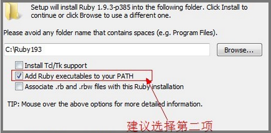
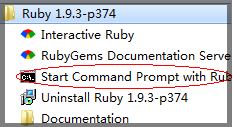

git安装
在 Windows 上安装 Git 同样轻松，有个叫做 msysGit 的项目提供了安装包，可以到 GitHub 的页面上下载 exe 安装文件并运行：
http://msysgit.github.com/
完成安装之后，就可以使用命令行的 git 工具（已经自带了 ssh 客户端）了，另外还有一个图形界面的 Git 项目管理工具
提交时老是提示输入用户名密码
git config --global credential.helper store
sass安装
因为sass依赖于ruby环境，所以装sass之前先确认装了ruby。先导官网下载个 ruby
在安装的时候，请勾选Add Ruby executables to your PATH这个选项，添加环境变量，不然以后使用编译软件的时候会提示找不到ruby环境

安装完ruby之后，在开始菜单中，找到刚才我们安装的ruby，打开Start Command Prompt with Ruby

然后直接在命令行中输入:
gem install sass
按回车键确认，等待一段时间就会提示你sass安装成功。 最近因为墙的比较厉害，如果你没有安装成功，那么请参考下面的淘宝的RubyGems镜像安装sass，如果成功则忽略。如果要安装beta版本的，可以在命令行中输入
gem install sass --pre
你还可以从sass的 Git repository来安装，git的命令行为
git clone git://github.com/nex3/sass.git
cd sass
rake install
升级sass版本的命令行为
gem update sass
查看sass版本的命令行为
sass -v
你也可以运行帮助命令行来查看你需要的命令
sass -h